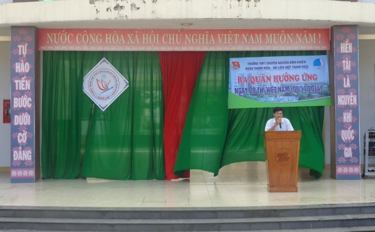
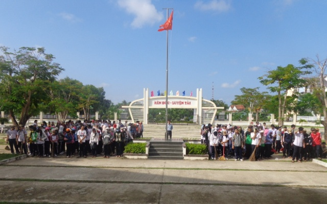

Ra quân dọn vệ sinh hưởng ứng ngày Đô thị Việt Nam

Lần cập nhật cuối lúc Thứ ba, 11 Tháng 11 2014 07:30 Viết bởi Administrator Thứ ba, 11 Tháng 11 2014 07:22
Chiều ngày 7.11, Đoàn trường THPT chuyên Nguyễn Bỉnh Khiêm (TP.Tam Kỳ) tổ chức lể ra quân hưởng ứng ngày Đô thị Việt Nam (8.11).

Ngay sau lễ phát động, toàn bộ các em học sinh khối lớp 10 của trường ra quân dọn dẹp vệ sinh các tuyến đường xung quanh khu vực trường Nguyễn Bỉnh Khiêm.
Đây là hoạt động nhằm tuyên truyền và nâng cao nhận thức cho mọi cá nhân, tập thể, tổ chức xã hội cùng hướng về môi trường đô thị xanh –sạch – đẹp. Qua đó, góp phần bảo vệ, giữ gìn và xây dựng đô thị Tam Kỳ ngày càng văn minh, tiến bộ.
Hồng Cường (tinhdoanqnam.vn)
Tin mới hơn:
- 02/04/2015 10:22 - Bộ Giáo dục công bố đề thi minh họa kỳ thi THPT qu…
- 27/02/2015 00:00 - 10 điểm nổi bật của quy chế kỳ thi THPT quốc gia
- 03/02/2015 07:03 - Băn khoăn với đổi mới giáo dục
- 31/01/2015 07:37 - Thứ trưởng Bộ GD-ĐT Nguyễn Vinh Hiển làm việ…
- 26/01/2015 16:59 - Bộ trưởng Bộ GĐ-ĐT chốt 10 điểm về kỳ thi quốc gia
Tin cũ hơn:
- itnbk.edu.vn
- 18/10/2014 07:08 - Sáng tạo trẻ chuyên Nguyễn Bỉnh Khiêm
- 25/09/2014 00:00 - Những người trẻ mê thiên văn học
- 15/09/2014 08:52 - Trao giải 5 đề tài đạt giải cuộc thi sáng tạo than…
- 30/08/2014 07:07 - Một lớp có 5 em học sinh đỗ thủ khoa đại học
- 01/04/2014 15:52 - Bộ GD&ĐT vừa công bố lịch thi tốt nghiệp THPT năm …